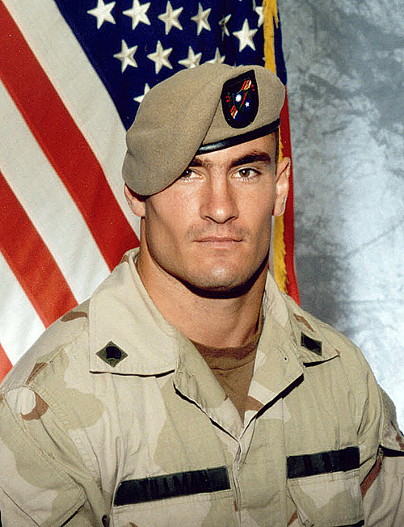

Last updated: May 22, 2024
Event Information
Patriot's Pursuit: A Tribute to Pat Tillman will be held on January 15, 2025 on the campus of Arizona State University. Registration fees are non-refundable and non-transferable, even in the event of inclement weather. Several different events will be happening throughout the day. Registration opens at 8:00 AM with the opening ceremony beginning at 9:00 AM on the lawn in front of Old Main.
Guest Speakers
- Arizona Cardinals Players (Present and Former)
- Head of the Veteran's Association, Phoenix, Arizona
- Commander of the Army National Guard, Arizona
Memorial Walk/Run
- Start Time: 12:00pm (noon)
- Route Details: Starts at the Old Main Lawn. Goes up to the ASU Football Stadium, around the field, and back to the Old Main Lawn.
- All participants receive a ribbon commemorating the event.
- Learn More
Important Information for Registrants
- Registration Deadline: September 25, 2024
- Registration Fee: $35 per person, $50 for a couple, $100 for a family of 4
- Event T-Shirt: Provided to all registered participants
- Donations: Accepted online and at the event
We look forward to your participation in Patriot's Pursuit: A Tribute to Pat Tillman. For any additional information or inquiries, please contact our event organizers at patriotpursuit@example.com. Thank you for joining us in honoring a true American hero and supporting the causes close to Pat Tillman's heart.
Send email